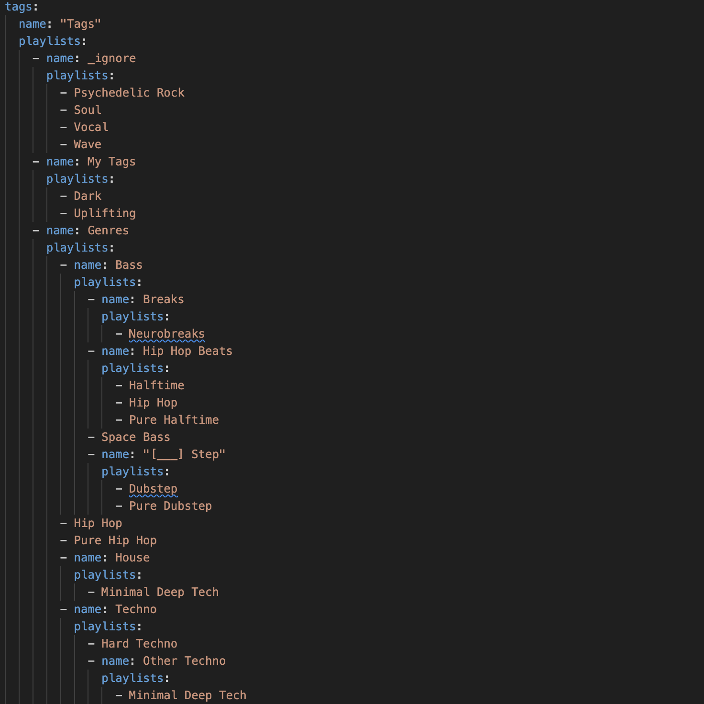
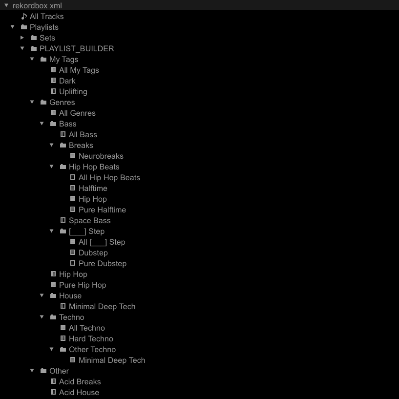

Build Playlists From Tags
In this guide you will learn how to automatically build playlists based off of the information encoded in the various tag attributes of the tracks in your Collection.
Prerequisites
Why build playlists from tags?
It's not uncommon, while mixing, to navigate playlists that contain tracks similar to the one currently playing. For most users, these playlists are painstakingly constructed to capture these similarities. For the wiser user, this process is made a little bit easier by extensive use of tagging.
If a user diligently tags their Collection using, say, the Genre tag, they then have the ability to search individual genres and create playlists based on the results of those searches. Unfortunately, this strategy has several shortcomings:
- The manual process of moving tracks into playlists can be both time consuming and error prone
- Having a change of heart with respect to the genre that a particular track belongs to means that that track must be removed from some existing playlist(s) and added to some different playlist(s)
- Searching, for example, "Techno" will show not only tracks that contain the word "techno" in their
Genretag but also any track that has any mention of the word "techno" associated with it (like a dubstep track whose title is "This track is not techno")
The collection_playlists feature solves all of these issues! It allows the wisest of users to configure a YAML file with a specification of arbitrary folders and playlists. The playlists' names match the tags that exist in your Collection.
How it's done
- Configure your desired playlist structure(s) for
tags - Run the command
--collection-playlists - Import the
PLAYLIST_BUILDERfolder from the generated collection
Example
Let's start by examining the pre-packaged YAML file collection_playlists.yaml: 
You can ignore the combiner part of the YAML for now. Although it's similar to the tags section, it's covered in the Combine Playlists With Boolean Algebra how-to guide.
The configuration above specifies a set of name folders with lists of playlists and / or folders inside of them. The leaves of this playlist tree are the actual playlists themselves named after the tag that the playlist will contain tracks for. Note that you can reference the same tag multiple times.
While not pictured above, the playlist_builder supports configuring the names of playlists if you'd like them to be something other than the tag used to create them.
For example, users may provide a map containing the tag_content field, which specifies the tag to use, and an optional name field to override the actual name of the playlist.
Note that if name is not provided, tag_content will be used as the playlist name.
Here's an example of overriding the name of a Hard Techno playlist to be "Techno that is hard":
- tag_content: Hard Techno
name: Techno that is hard
Every folder will create an implicit playlist called All <folder name> which recursively aggregates the tracks from all the playlists within that folder. For example, my Techno folder will have a playlist called All Techno which contains the union of tracks between Hard Techno and Minimal Deep Tech.
You may only have one tag for each playlist. If you're interested in creating playlists that combine multiple tags, check out the Combiner how-to guide.
Any tags in your Collection that are not included in the collection_playlists.yaml configuration file will automatically be added to either a Unused Tags playlist or an Unused Tags folder with a playlist for each tag (you can configure this behavior using COLLECTION_PLAYLISTS_REMAINDER).
If there are tags for which you're not interested in creating an Unused Tags playlist(s) for, simply add a new folder to the tree call _ignore and list the tags underneath of it.
During operation of the playlist_builder, after the tag playlists are constructed, optional PlaylistFilters are applied to enable special filtering.
In general, each PlaylistFilter calls a is_filter_playlist method which returns True if the playlist should have filtering logic applied to it.
For each track in the playlist, the PlaylistFilter method filter_track is called with the track and returns True if the track should remain in the playlist.
You may configure which, if any, PlaylistFilters you want applied using the COLLECTION_PLAYLIST_FILTERS option. Check the references for the current set of implemented PlaylistFilters.
Once you've finalized your playlist configuration, run the following command to build the playlists:
djtools --collection-playlists
Now you can import the PLAYLIST_BUILDER folder to load these playlists into your Collection:
